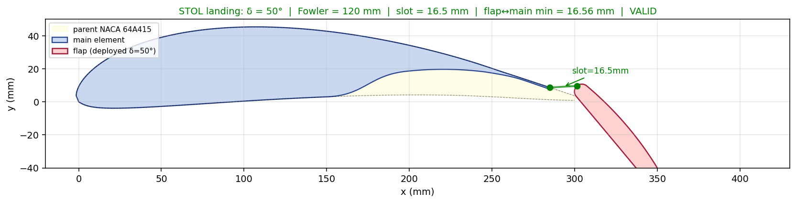
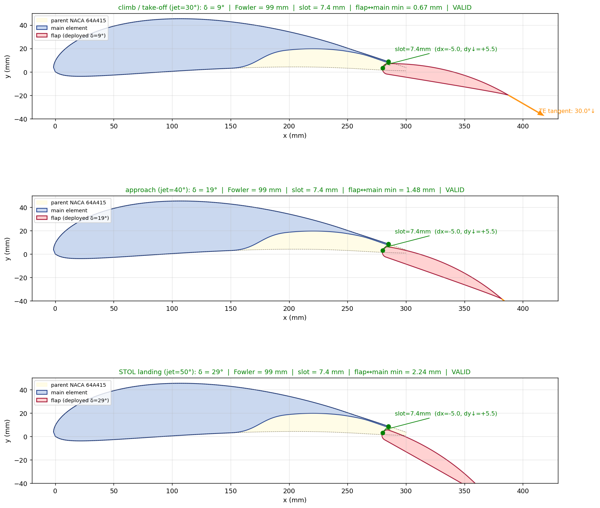
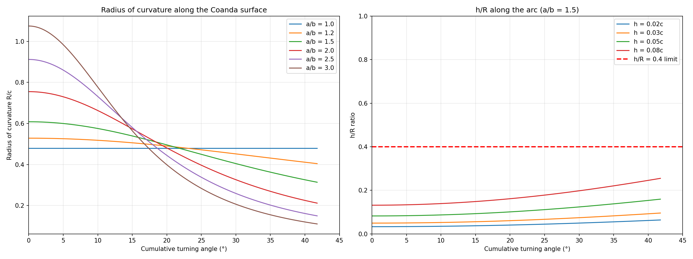

Focus
Short take-off and landing
Architectures
Counter-circulation, DIP
Output
CL vs alpha polars
Mechanism
Boundary-layer control

Blowing for lift
Short take off and landing aircraft need far more lift at low speed than a clean wing can give, and one way to get it is to blow air over the wing. I evaluated counter circulation and distributed integrated propulsion blown wing architectures, generating lift versus angle of attack polars through parametric studies to quantify the stall delay and the high lift enhancement from boundary layer control.


Slipstream and the wing
A large part of the work was the interaction between the propeller slipstream and the wing chord, because that is where the extra lift in distributed propulsion actually comes from. Quantifying it tells you how much the blowing buys you in the low speed regime that matters for take off.

STOLSlipstreamBoundary-layer controlBlown wing